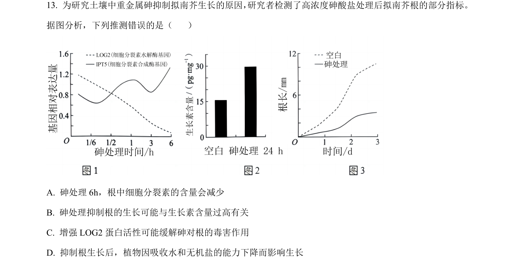
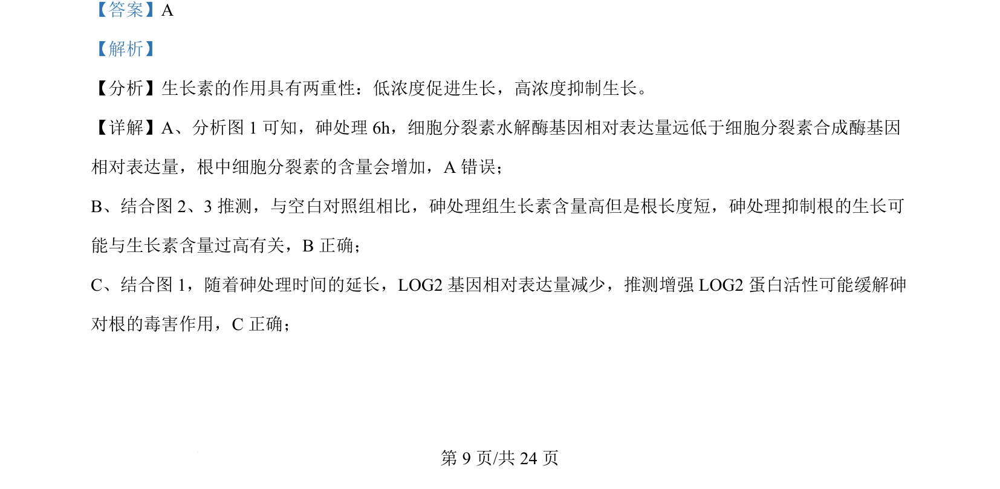
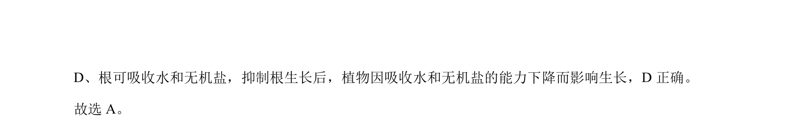

考点：生长素 细胞分裂素 基因表达

该题通过实验数据考查砷处理对拟南芥根中激素含量及相关基因表达的影响。


📄 原 PDF 第 9 页：
素材/真题/吉林/2008-2024·（吉林）生物高考真题/2024年高考生物试卷（辽宁）（解析卷）.pdf
【答案】A 【解析】 【分析】生长素的作用具有两重性：低浓度促进生长，高浓度抑制生长。 【详解】A、分析图 1 可知，砷处理 6h，细胞分裂素水解酶基因相对表达量远低于细胞分裂素合成酶基因 相对表达量，根中细胞分裂素的含量会增加，A 错误； B、结合图 2、3推测，与空白对照组相比，砷处理组生长素含量高但是根长度短，砷处理抑制根的生长可 能与生长素含量过高有关，B正确； C、结合图 1，随着砷处理时间的延长，LOG2 基因相对表达量减少，推测增强 LOG2 蛋白活性可能缓解砷 对根的毒害作用，C正确；